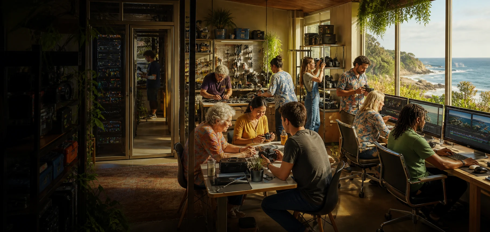

Local capability
More people understand how the system works, where its limits sit and how to recover it.

Ready Sustainable Employment and Training describes a cooperative layer around the node: practical pathways into paid work, learning, equipment access and locally useful services.
A cooperative layer holds equipment, coordinates services, creates paid pathways and supports learning. Cultural decisions stay with the people and relationships connected to each project.
Equipment layer
Access, booking, maintenance, insurance and lifecycle planning.
Work layer
Paid projects, technical services, creative production and local operations.
Learning layer
Supported practice, mentoring, credentials where useful and peer exchange.
Monitoring, access, backups, incident records, service priorities and recovery practice.
More people understand how the system works, where its limits sit and how to recover it.
Equipment that is unrealistic for one person becomes a managed resource for suitable projects.
Repeated work supports trust, correction and continuity beyond one short technical pilot.
Shared media production, a maker workshop and community-wealth research each need different roles around the same local infrastructure.
 Public cooperative proposal
Ready S.E.T. Co-op Trust HubConnects trust building, coworking, shared assets, local jobs, media and project pathways around the proposed Ready S.E.T. Co-op.Rack connectionShared compute supports training, media production, project administration and paid local workflows.Open project ↗
Public cooperative proposal
Ready S.E.T. Co-op Trust HubConnects trust building, coworking, shared assets, local jobs, media and project pathways around the proposed Ready S.E.T. Co-op.Rack connectionShared compute supports training, media production, project administration and paid local workflows.Open project ↗
 Staged public proposal
Minjerribah Screen & Media NetworkLinks island stories, training, public screens, film, local media and practical production pathways through a staged collaboration proposal.Rack connectionLocal editing, transcription, archive search and screen rendering for island media.Open project ↗
Staged public proposal
Minjerribah Screen & Media NetworkLinks island stories, training, public screens, film, local media and practical production pathways through a staged collaboration proposal.Rack connectionLocal editing, transcription, archive search and screen rendering for island media.Open project ↗
 Public makerspace proposal
Straddie Makerspace LabExplores a Dunwich workshop for making, repair, shared tools, recycled materials, local sand experiments and community learning.Rack connectionCAD workstations, local rendering and fabrication files support design, learning and repair.Open project ↗
Public makerspace proposal
Straddie Makerspace LabExplores a Dunwich workshop for making, repair, shared tools, recycled materials, local sand experiments and community learning.Rack connectionCAD workstations, local rendering and fabrication files support design, learning and repair.Open project ↗
 Public research doorway
Moreton Bay Community Wealth and MutualsExplores community wealth funds, mutual protection, Indigenous data sovereignty, Native Title pathways and everyday choices across the Moreton Bay archipelago.Rack connectionLocal analysis models infrastructure value, risk and community benefit pathways.Open project ↗
Public research doorway
Moreton Bay Community Wealth and MutualsExplores community wealth funds, mutual protection, Indigenous data sovereignty, Native Title pathways and everyday choices across the Moreton Bay archipelago.Rack connectionLocal analysis models infrastructure value, risk and community benefit pathways.Open project ↗
Membership: Who wants to participate, and under what terms?
Benefit: What value stays with workers, creators, custodians and the local community?
Responsibility: Who holds equipment risk, employment duties, privacy and service obligations?
Boundaries: Which decisions sit with the co-op, and which clearly do not?
Exit: What happens to equipment, data, access and unfinished work if the structure changes?